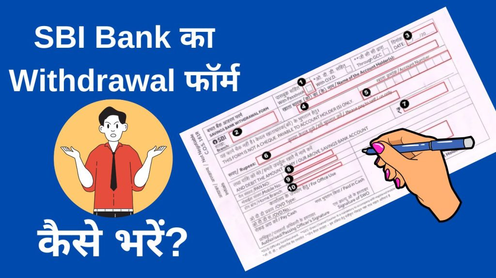

प्रस्तावना
SBI (स्टेट बैंक ऑफ़ इंडिया) बैंक अपने ग्राहकों को आसानी से पैसे निकालने की सुविधा देती है। पैसे निकालने के लिए आपको एक निकासी फॉर्म भरना होता है जिसे आपको बैंक के कैश काउंटर पर जमा करना होता है । इस लेख में हम आपको बताएंगे कि SBI Bank Se Paise Nikalne Ka Form Kaise Bhare तो आइए जानते हैं ।
पैसे निकालने का फॉर्म क्या है ? ( What is withdrawal form in hindi )
पैसे निकालने का फॉर्म को “निकाशी फॉर्म” या “Withdrawal Form” कहा जाता है। इस फॉर्म का उपयोग वित्तीय संस्था, जैसे बैंक, पोस्ट ऑफिस या किसी अन्य वित्तीय संस्था में जमा किए गए पैसों को खाताधारक द्वारा निकालने के लिए किया जाता है। यह फॉर्म सामान्यतया बैंक और वित्तीय संस्था के काउंटर पर उपलब्ध होता है जिसे बैंक में भरकर जमा किया जाता है ।
SBI Withdrawal Form से पैसे कैसे निकाले?
सबसे पहले, SBI के नजदीकी शाखा में जाएं और Withdrawal Form प्राप्त करें। फॉर्म को पूरा करने के लिए आवश्यक जानकारी जैसे खाता नंबर, खाताधारक का नाम, तारीख़,निकालने की राशि और अन्य विवरण भरें।
फॉर्म को पूरा करने के बाद, अपना बैंक पासबुक, आधार कार्ड, पैन कार्ड या अन्य पहचान पत्र, और खाताधारक के हस्ताक्षर के साथ अपना आवेदन स्वीकृत करने के लिए बैंक काउंटर पर जाकर फॉर्म जमा करें ।फॉर्म के सत्यापन के बाद, आपको खाता से नकदी निकालकर आपको दे दी जाएगी।
State Bank of India Paise Nikalne Ka Form कहाँ से प्राप्त करें ?
SBI Bank Se Paise Nikalne Ka Form Kaise Bhare ये जानने से पहले आपको ये जानना है की फॉर्म कहा से प्राप्त करें,पैसा निकालने वाला फॉर्म आप अपनी बैंक शाखा से प्राप्त कर सकते हैं। यदि आपका खाता एसबीआई (SBI) में है, तो आपको अपने नजदीकी SBI शाखा में जाकर Withdrawal Form प्राप्त कर सकते हैं।
आप SBI के शाखा में जाकर कैश काउंटर कर्मचारी से यह बात कहें कि आपको पैसा निकालने के लिए फॉर्म चाहिए ।वे आपको Withdrawal Form उपलब्ध करायेंगे।
अगर आपको बैंक शाखा में जाकर पैसे निकासी का फॉर्म लेने में परेशानी हो रही है तो आप Online भी Withdrawal Form डाउनलोड कर सकते हैं –Download Withdraw Form SBI
SBI Bank Se Paise Nikalne Ka Form PDF Download – Click Here
SBI se Paise Nikalne Ke लिए आवश्यक दस्तावेज कौन कौन से है?
यदि आप SBI से नकदी निकालने के लिए फॉर्म भर रहे हैं, तो आपको निम्नलिखित दस्तावेज की आवश्यकता होगी:
- सबसे पहले आपको नीले और काले बॉलपेन की आवश्यकता होगी इस फॉर्म को भरने के लिए लाल या हरे पेन का उयोग ना करें।
- खाता धारक का नाम और पता ।
- नकदी निकालने की राशि (रुपये में)।
- निकालने की तिथि और समय।
- आपका पैन कार्ड या वोटर आईडी कार्ड जैसा कोई मान्यता प्राप्त पहचान पत्र (ID Proof)।
- आपकी बैंक खाता पासबुक या चेकबुक जिसपे आपका नाम और खाता संख्या दर्ज हो।
- विशेष मामलों में, आपको अतिरिक्त दस्तावेज जैसे कि निर्माण कार्ड, व्यवसाय प्रमाणपत्र, आदि भी सबमिट करने की जरूरत हो सकती है।
- How To Activate Auto Sweep Facility for SBI Account: A Step-by-Step Guide
- SBI में ECS ACH Return Charges क्या हैं? जानिए इसकी पूरी जानकारी
- SBI Credit Card band kaise kare? ऐसे करे अपना credit कार्ड बंद
- SBI Yono PAPL Loan क्या है?
{kind=link}

SBI Bank Se Paise Nikalne Ka Form Kaise Bhare?
मुझे उम्मीद है की अब तक आपको SBI (State Bank of India) का पैसे निकालने का फॉर्म (SBI Withdrawal Form ) बैंक से मिल गया होगा अब आपको ऊपर बताये गये दस्तावेज एवं जानकारी तैयार रखना है ,इसके बाद नीचे दिये गये Steps Follow करके SBI के पैसे निकालने का फॉर्म भर सकते हैं ।तो आइए जानते हैं कि SBI Bank Se Paise Nikalne Ka Form Kaise Bhare?
#Step-1 : यहाँ tick लगाना है की आप इस फॉर्म के साथ Passbook भी लाए हैं।
#Step-2: यहाँ आपक अपने SBI(State Bank of India) के शाखा का नाम डालना है जहां से आप पैसे निकल रहे हैं ।
#Step-3: यहाँ पर आपको आज का Date डालना है जिस दिन आप पैसे निकल रहे हैं वो तारीख़ आपको यहाँ अंकित करना है ।
#Step-4: यहाँ आपको खाताधारक यानी की आपके ख़ुद का नाम डालना है । ध्यान दे की वही नाम डालना है जो आपके बैंक अकाउंट में दर्ज है ।
#Step-5: आपको यहाँ अपना खाता संख्यान डालना है ,खाता संख्या आपको आपके बैंक के पासबुक के पहले पन्ने पर मिलेगा ।
#Step-6: यहाँ आपको निकाशी करने की राशि शब्दों में डालना है ,उदाहरण के लिए -अगर आपको 1000/- रुपए निकालने है तो यहाँ आपको – One thousand rupee या (एक हज़ार रुपए मात्र)।
#Step-7: यहाँ आपको निकाशी करने की राशि Numbers में डालना है ,उदाहरण के लिए -अगर आपको 1000.00 रुपए निकालने है तो यहाँ आपको – 1000/- डालना हैं ।
#Step-8: यहाँ पर आपको अपना Pan Number डालना है ,अगर आपके पास pan नंबर नहीं है तो आप 50,000/-(पच्चास हज़ार से ज़्यादा पैसे नहीं निकाल सकते हैं )
#Step-9: यहाँ आपको अपना मोबाइल नंबर डालना है ।
#Step-10:Home Branch का नाम डालें SBI के जिस Branch में आपका खाता है उसका नाम यहाँ आपको डालना है ।
#Step-11:Signature करें आपको यहाँ अपना हस्ताक्षरे करना है ।
SBI Withdrawal Form से कितना पैसा निकाल सकते हैं?
कैश निकालने का लिमिट : होम ब्रांच पर नकद भुगतान:
- आप होम ब्रांच पर असीमित निकासी और थर्ड पार्टी को ट्रांसफ़र कर सकते हैं
कैश निकालने: गैर-होम ब्रांच पर नकद भुगतान:
दिन की अधिकतम सीमा
- a) ‘पी’ सेगमेंट: i. स्वयं भुगतान: ₹50,000/-, तीसरे पक्ष को कोई नकद भुगतान नहीं।
- ‘पी’ सेगमेंट – स्वयं के लिए ₹5,000/- (निकालने के फॉर्म का उपयोग करके) जिसमें सेविंग्स बैंक पासबुक संलग्न हो।
iii. सुपर सीनियर सिटीजन्स (80 साल से अधिक उम्र के): तीसरे पक्ष को ₹10,000/- तक नकद भुगतान करने की अनुमति।
SBI बैंक से पैसा निकालने वाला फॉर्म भरते समय ध्यान रखने योग्य बातें ।
साफ़ साफ़ लिखें : आपको SBI के निकासी फॉर्म भरते समय ध्यान देना है की कहीं भी काट खोट नहीं होनी चाहिए ,और ओवर राइटिंग नहीं होनी चाहिए ,अगर ज़रूरत पड़े तो आप दूसरा फॉर्म भी भर सकते हैं ।
सही फॉर्म चुने : सबसे पहले आपको यह सुनिश्चित करना है कि आप सही पैसा निकालने का फॉर्म भर रहे हैं। बैंक में कई तरह के फॉर्म होते हैं तो आपको निकासी के लिए ही फॉर्म भरना है ।
आवश्यक दस्तावेज़: पैसा निकालने के लिए आवश्यक दस्तावेज़ों को अपने साथ रखे आमतौर पर बैंक पासबुक ,आधार कार्ड और पैन कार्ड की आवश्यकता होती है ।
नाम और खाता संख्या: जब आप निकासी फॉर्म भरते हैं, तो ध्यान दें कि आपने अपने नाम और खाता संख्या को सही तरीके से लिखा है। गलत जानकारी से आपके पैसे का निकासी होने में देरी हो सकती है ।
अंतिम तिथि: यदि आपके पास कोई अंतिम तिथि है, तो सुनिश्चित करें कि आप उसे पूरा कर देते हैं। फॉर्म जमा करने की अंतिम तिथि से पहले उसे जमा कर दें, ताकि आपका पैसा समय पर निकल सके।
फॉर्म की कॉपी : फॉर्म की एक कॉपी बनाएं और उसे सुरक्षित रखें। इससे आपको भविष्य में किसी प्रकार की समस्या के मामले में सहायता मिल सकती है।
SBI Bank Se Paise Nikalne से संबंधित अक्सर पूछे जाने वाले प्रश्न :-
बैंक से पैसा कैसे निकाला जाता है?
बैंक में जाकर Withdrawal Form या चेक भरकर जमा करके।
मैं अपनी निकासी पर्ची से पैसे कैसे निकालूं?
निकासी पर्ची भरकर बैंक काउंटर पर जमा करें और इंतज़ार करें।
जमा करने और अपने खाते से पैसे निकालने के लिए कौन सा फॉर्म चाहिए?
आपको जमा करना है तो आप Deposite फॉर्म बैंक काउंटर पर माँगे और निकासी करना है तो निकासी फॉर्म माँगे।
बैंक से पैसे निकालने वाले फॉर्म को क्या कहते हैं?
Cash Withdraw Sleep (नगद निकासी पर्ची)।
क्या मैं किसी बैंक में कैश जमा कर सकता हूं?
हाँ, आप किसी भी बैंक में कैश जमा कर सकते है सिर्फ़ आपका उस बैंक में खाता होना चाहिए।
दूसरे के अकाउंट से पैसा कैसे निकाला जाता है?
दूसरे वक़्ति को आपके नाम का चेक बनाना होगा,उस चेक को लेकर आप बैंक में जाएँगे तो आप उस वक़्ति के खाते से पैसे निकल सकते हैं।
निकासी पर्ची और जमा पर्ची में आवश्यक जानकारी क्या हैं?
तारीख़,नाम,खाता संख्या,बैंक का नाम,और खातेधारक का हस्ताक्षर।
जमा पर्ची में क्या विवरण पूछा जाता है?
तारीख, जमाकर्ता का नाम, जमाकर्ता का खाता नंबर और जमा की जाने वाली राशि।
बैंक से रुपए निकासी करने के लिए निम्न में किसका होना अनिवार्य है?
Passbook, और आपके खाते में पैसे होने ज़रूरी है।
बैंक से 1 दिन में कितना पैसा निकाल सकते हैं?
Non-Home ब्रांच में 50,000/- और होम ब्रांच में असीमित निकासी कर सकते है।
क्या मैं अपने सारे पैसे एसबीआई अकाउंट से निकाल सकता हूं?
हाँ।
क्या मैं उसी बैंक की दूसरी शाखा से पैसे निकाल सकता हूं?
हाँ,लेकिन अधिकतम 50,000/- ही निकल सकते हैं
मैं बिना पासबुक के पैसे कैसे निकाल सकता हूं?
चेक से।
आज आपने क्या सीखा?
आज आपने सीखा की Sbi (State Bank of India) के किसी भी ब्रांच से पैसे कैसे निकलते हैं? ,SBI Bank Se Paise Nikalne Ka Form कहा से मिलता है,पैसे निकालने के लिए क्या क्या ज़रूरत होती है,मुझे उम्मीद है की आप इस पोस्ट को पूरे पढ़े होंगे और आप समझ गये होंगे कि SBI Bank Se Paise Nikalne Ka Form Kaise Bhare,धन्यवाद।